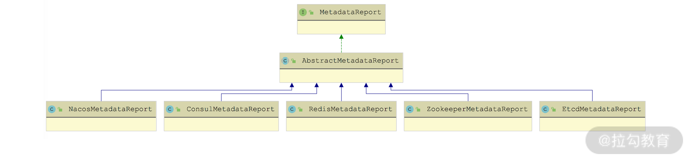
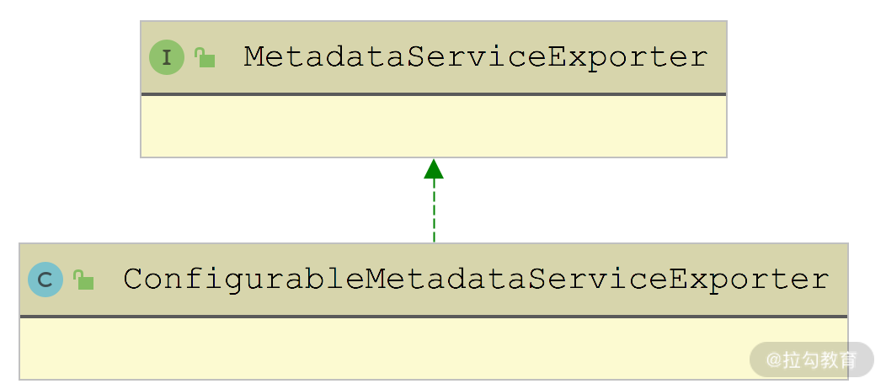

- 00 开篇词 深入掌握 Dubbo 原理与实现，提升你的职场竞争力.md.html
- 01 Dubbo 源码环境搭建：千里之行，始于足下.md.html
- 02 Dubbo 的配置总线：抓住 URL，就理解了半个 Dubbo.md.html
- 03 Dubbo SPI 精析，接口实现两极反转（上）.md.html
- 04 Dubbo SPI 精析，接口实现两极反转（下）.md.html
- 05 海量定时任务，一个时间轮搞定.md.html
- 06 ZooKeeper 与 Curator，求你别用 ZkClient 了（上）.md.html
- 07 ZooKeeper 与 Curator，求你别用 ZkClient 了（下）.md.html
- 08 代理模式与常见实现.md.html
- 09 Netty 入门，用它做网络编程都说好（上）.md.html
- 10 Netty 入门，用它做网络编程都说好（下）.md.html
- 11 简易版 RPC 框架实现（上）.md.html
- 12 简易版 RPC 框架实现（下）.md.html
- 13 本地缓存：降低 ZooKeeper 压力的一个常用手段.md.html
- 14 重试机制是网络操作的基本保证.md.html
- 15 ZooKeeper 注册中心实现，官方推荐注册中心实践.md.html
- 16 Dubbo Serialize 层：多种序列化算法，总有一款适合你.md.html
- 17 Dubbo Remoting 层核心接口分析：这居然是一套兼容所有 NIO 框架的设计？.md.html
- 18 Buffer 缓冲区：我们不生产数据，我们只是数据的搬运工.md.html
- 19 Transporter 层核心实现：编解码与线程模型一文打尽（上）.md.html
- 20 Transporter 层核心实现：编解码与线程模型一文打尽（下）.md.html
- 21 Exchange 层剖析：彻底搞懂 Request-Response 模型（上）.md.html
- 22 Exchange 层剖析：彻底搞懂 Request-Response 模型（下）.md.html
- 23 核心接口介绍，RPC 层骨架梳理.md.html
- 24 从 Protocol 起手，看服务暴露和服务引用的全流程（上）.md.html
- 25 从 Protocol 起手，看服务暴露和服务引用的全流程（下）.md.html
- 26 加餐：直击 Dubbo “心脏”，带你一起探秘 Invoker（上）.md.html
- 27 加餐：直击 Dubbo “心脏”，带你一起探秘 Invoker（下）.md.html
- 28 复杂问题简单化，代理帮你隐藏了多少底层细节？.md.html
- 29 加餐：HTTP 协议 + JSON-RPC，Dubbo 跨语言就是如此简单.md.html
- 30 Filter 接口，扩展 Dubbo 框架的常用手段指北.md.html
- 31 加餐：深潜 Directory 实现，探秘服务目录玄机.md.html
- 32 路由机制：请求到底怎么走，它说了算（上）.md.html
- 33 路由机制：请求到底怎么走，它说了算（下）.md.html
- 34 加餐：初探 Dubbo 动态配置的那些事儿.md.html
- 35 负载均衡：公平公正物尽其用的负载均衡策略，这里都有（上）.md.html
- 36 负载均衡：公平公正物尽其用的负载均衡策略，这里都有（下）.md.html
- 37 集群容错：一个好汉三个帮（上）.md.html
- 38 集群容错：一个好汉三个帮（下）.md.html
- 39 加餐：多个返回值不用怕，Merger 合并器来帮忙.md.html
- 40 加餐：模拟远程调用，Mock 机制帮你搞定.md.html
- 41 加餐：一键通关服务发布全流程.md.html
- 42 加餐：服务引用流程全解析.md.html
- 43 服务自省设计方案：新版本新方案.md.html
- 44 元数据方案深度剖析，如何避免注册中心数据量膨胀？.md.html
- 45 加餐：深入服务自省方案中的服务发布订阅（上）.md.html
- 46 加餐：深入服务自省方案中的服务发布订阅（下）.md.html
- 47 配置中心设计与实现：集中化配置 and 本地化配置，我都要（上）.md.html
- 48 配置中心设计与实现：集中化配置 and 本地化配置，我都要（下）.md.html
- 49 结束语 认真学习，缩小差距.md.html
- 捐赠
44 元数据方案深度剖析，如何避免注册中心数据量膨胀？
在上一课时，我们详细介绍了 Dubbo 传统架构面临的挑战，以及 Dubbo 2.7.5 版本引入的服务自省方案是如何应对这些挑战的。
本课时我们将从服务自省方案的基础设施开始介绍其具体实现。我们首先会介绍元数据相关的基础类的定义，然后介绍元数据的上报以及元数据服务的相关内容，同时还会介绍 Service ID 与 Service Name 是如何映射的。
ServiceInstance
Service Instance 唯一标识一个服务实例，在 Dubbo 的源码中对应 ServiceInstance 接口，该接口的具体定义如下：
public interface ServiceInstance extends Serializable {
// 唯一标识
String getId();
// 获取当前ServiceInstance所属的Service Name
String getServiceName();
// 获取当前ServiceInstance的host
String getHost();
// 获取当前ServiceInstance的port
Integer getPort();
// 当前ServiceInstance的状态
default boolean isEnabled() {
return true;
}
// 检测当前ServiceInstance的状态
default boolean isHealthy() {
return true;
}
// 获取当前ServiceInstance关联的元数据，这些元数据以KV格式存储
Map<String, String> getMetadata();
// 计算当前ServiceInstance对象的hashCode值
int hashCode();
// 比较两个ServiceInstance对象
boolean equals(Object another);
}
DefaultServiceInstance 是 ServiceInstance 的唯一实现，DefaultServiceInstance 是一个普通的 POJO 类，其中的核心字段如下。
- id（String 类型）：ServiceInstance 唯一标识。
- serviceName（String 类型）：ServiceInstance 关联的 Service Name。
- host（String 类型）：ServiceInstance 的 host。
- port（Integer 类型）：ServiceInstance 的 port。
- enabled（boolean 类型）：ServiceInstance 是否可用的状态。
- healthy（boolean 类型）：ServiceInstance 的健康状态。
- metadata（Map
ServiceDefinition
Dubbo 元数据服务与我们业务中发布的 Dubbo 服务无异，Consumer 端可以调用一个 ServiceInstance 的元数据服务获取其发布的全部服务的元数据。
说到元数据，就不得不提到 ServiceDefinition 这个类，它可以来描述一个服务接口的定义，其核心字段如下。
- canonicalName（String 类型）：接口的完全限定名称。
- codeSource（String 类型）：服务接口所在的完整路径。
- methods（List 类型）：接口中定义的全部方法描述信息。在 MethodDefinition 中记录了方法的名称、参数类型、返回值类型以及方法参数涉及的所有 TypeDefinition。
- types（List 类型）：接口定义中涉及的全部类型描述信息，包括方法的参数和字段，如果遇到复杂类型，TypeDefinition 会递归获取复杂类型内部的字段。在 dubbo-metadata-api 模块中，提供了多种类型对应的 TypeBuilder 用于创建对应的 TypeDefinition，对于没有特定 TypeBuilder 实现的类型，会使用 DefaultTypeBuilder。

TypeBuilder 接口实现关系图
在服务发布的时候，会将服务的 URL 中的部分数据封装为 FullServiceDefinition 对象，然后作为元数据存储起来。FullServiceDefinition 继承了 ServiceDefinition，并在 ServiceDefinition 基础之上扩展了 params 集合（Map
MetadataService
接下来看 MetadataService 接口，在上一讲我们提到Dubbo 中的每个 ServiceInstance 都会发布 MetadataService 接口供 Consumer 端查询元数据，下图展示了 MetadataService 接口的继承关系：

MetadataService 接口继承关系图
在 MetadataService 接口中定义了查询当前 ServiceInstance 发布的元数据的相关方法，具体如下所示：
public interface MetadataService {
String serviceName(); // 获取当前ServiceInstance所属服务的名称
default String version() {
return VERSION; // 获取当前MetadataService接口的版本
}
// 获取当前ServiceInstance订阅的全部URL
default SortedSet<String> getSubscribedURLs(){
throw new UnsupportedOperationException("This operation is not supported for consumer.");
}
// 获取当前ServiceInstance发布的全部URL
default SortedSet<String> getExportedURLs() {
return getExportedURLs(ALL_SERVICE_INTERFACES);
}
// 根据服务接口查找当前ServiceInstance暴露的全部接口
default SortedSet<String> getExportedURLs(String serviceInterface) {
return getExportedURLs(serviceInterface, null);
}
// 根据服务接口和group两个条件查找当前ServiceInstance暴露的全部接口
default SortedSet<String> getExportedURLs(String serviceInterface, String group) {
return getExportedURLs(serviceInterface, group, null);
}
// 根据服务接口、group和version三个条件查找当前ServiceInstance暴露的全部接口
default SortedSet<String> getExportedURLs(String serviceInterface, String group, String version) {
return getExportedURLs(serviceInterface, group, version, null);
}
// 根据服务接口、group、version和protocol四个条件查找当前ServiceInstance暴露的全部接口
SortedSet<String> getExportedURLs(String serviceInterface, String group, String version, String protocol);
// 根据指定条件查询ServiceDefinition
String getServiceDefinition(String interfaceName, String version, String group);
String getServiceDefinition(String serviceKey);
}
在 MetadataService 接口中定义的都是查询元数据的方法，在其子接口 WritableMetadataService 中添加了一些发布元数据的写方法，具体定义如下：
@SPI(DEFAULT_METADATA_STORAGE_TYPE)
public interface WritableMetadataService extends MetadataService {
@Override
default String serviceName() {
// ServiceName默认是从ApplicationModel中获取
// ExtensionLoader、DubboBootstrap以及ApplicationModel是单个Dubbo进程范围内的单例对象，
// ExtensionLoader用于Dubbo SPI机制加载扩展实现，DubboBootstrap用于启动Dubbo进程，
// ApplicationModel用于表示一个Dubbo实例，其中维护了多个ProviderModel对象表示当前Dubbo实例发布的服务，
// 维护了多个ConsumerModel对象表示当前Dubbo实例引用的服务。
return ApplicationModel.getApplication();
}
boolean exportURL(URL url); // 发布该URL所代表的服务
boolean unexportURL(URL url); // 注销该URL所代表的服务
default boolean refreshMetadata(String exportedRevision, String subscribedRevision) {
return true; // 刷新元数据
}
boolean subscribeURL(URL url); // 订阅该URL所代表的服务
boolean unsubscribeURL(URL url); // 取消订阅该URL所代表的服务
// 发布Provider端的ServiceDefinition
void publishServiceDefinition(URL providerUrl);
// 获取WritableMetadataService的默认扩展实现
static WritableMetadataService getDefaultExtension() {
return getExtensionLoader(WritableMetadataService.class).getDefaultExtension();
}
// 获取WritableMetadataService接口指定的扩展实现（无指定扩展名称，则返回默认扩展实现）
static WritableMetadataService getExtension(String name) {
return getExtensionLoader(WritableMetadataService.class).getOrDefaultExtension(name);
}
}
WritableMetadataService 接口被 @SPI 注解修饰，是一个扩展接口，在前面的继承关系图中也可以看出，它有两个比较基础的扩展实现，分别是 InMemoryWritableMetadataService（默认扩展实现） 和 RemoteWritableMetadataServiceDelegate，对应扩展名分别是 local 和 remote。
下面我们先来看 InMemoryWritableMetadataService 的实现，其中维护了三个核心集合。
- exportedServiceURLs（ConcurrentSkipListMap
- subscribedServiceURLs（ConcurrentSkipListMap
- serviceDefinitions（ConcurrentSkipListMap
InMemoryWritableMetadataService 对 getExportedURLs()、getSubscribedURLs() 以及 getServiceDefinition() 方法的实现，就是查询上述三个集合的数据；对 (un)exportURL()、(un)subscribeURL() 和 publishServiceDefinition() 方法的实现，就是增删上述三个集合的数据。
(un)exportURL()、(un)subscribeURL() 等方法都是非常简单的集合操作，我们就不再展示，你若感兴趣的话可以参考源码进行学习。 这里我们重点来看一下 publishServiceDefinition() 方法对 ServiceDefinition 的处理：
public void publishServiceDefinition(URL providerUrl) {
// 获取服务接口
String interfaceName = providerUrl.getParameter(INTERFACE_KEY);
if (StringUtils.isNotEmpty(interfaceName)
&& !ProtocolUtils.isGeneric(providerUrl.getParameter(GENERIC_KEY))) {
Class interfaceClass = Class.forName(interfaceName);
// 创建服务接口对应的ServiceDefinition对象
ServiceDefinition serviceDefinition = ServiceDefinitionBuilder.build(interfaceClass);
Gson gson = new Gson();
// 将ServiceDefinition对象序列化为JSON对象
String data = gson.toJson(serviceDefinition);
// 将ServiceDefinition对象序列化之后的JSON字符串记录到serviceDefinitions集合
serviceDefinitions.put(providerUrl.getServiceKey(), data);
return;
}
}
在 RemoteWritableMetadataService 实现中封装了一个 InMemoryWritableMetadataService 对象，并对 publishServiceDefinition() 方法进行了覆盖，具体实现如下：
public void publishServiceDefinition(URL url) {
// 获取URL中的side参数值，决定调用publishProvider()还是publishConsumer()方法
String side = url.getParameter(SIDE_KEY);
if (PROVIDER_SIDE.equalsIgnoreCase(side)) {
publishProvider(url);
} else {
publishConsumer(url);
}
}
在 publishProvider() 方法中，首先会根据 Provider URL 创建对应的 FullServiceDefinition 对象，然后通过 MetadataReport 进行上报，具体实现如下：
private void publishProvider(URL providerUrl) throws RpcException {
// 删除pid、timestamp、bind.ip、bind.port等参数
providerUrl = providerUrl.removeParameters(PID_KEY, TIMESTAMP_KEY, Constants.BIND_IP_KEY,
Constants.BIND_PORT_KEY, TIMESTAMP_KEY);
// 获取服务接口名称
String interfaceName = providerUrl.getParameter(INTERFACE_KEY);
if (StringUtils.isNotEmpty(interfaceName)) {
Class interfaceClass = Class.forName(interfaceName); // 反射
// 创建服务接口对应的FullServiceDefinition对象，URL中的参数会记录到FullServiceDefinition的params集合中
FullServiceDefinition fullServiceDefinition = ServiceDefinitionBuilder.buildFullDefinition(interfaceClass,
providerUrl.getParameters());
// 获取MetadataReport并上报FullServiceDefinition
getMetadataReport().storeProviderMetadata(new MetadataIdentifier(providerUrl.getServiceInterface(),
providerUrl.getParameter(VERSION_KEY), providerUrl.getParameter(GROUP_KEY),
PROVIDER_SIDE, providerUrl.getParameter(APPLICATION_KEY)), fullServiceDefinition);
return;
}
}
publishConsumer() 方法则相对比较简单：首先会清理 Consumer URL 中 pid、timestamp 等参数，然后将 Consumer URL 中的参数集合进行上报。
不过，在 RemoteWritableMetadataService 中的 exportURL()、subscribeURL()、getExportedURLs()、getServiceDefinition() 等一系列方法都是空实现，这是为什么呢？其实我们从 RemoteWritableMetadataServiceDelegate 中就可以找到答案，注意，RemoteWritableMetadataServiceDelegate 才是 MetadataService 接口的 remote 扩展实现。
在 RemoteWritableMetadataServiceDelegate 中同时维护了一个 InMemoryWritableMetadataService 对象和 RemoteWritableMetadataService 对象，exportURL()、subscribeURL() 等发布订阅相关的方法会同时委托给这两个 MetadataService 对象，getExportedURLs()、getServiceDefinition() 等查询方法则只会调用 InMemoryWritableMetadataService 对象进行查询。这里我们以 exportURL() 方法为例进行说明：
public boolean exportURL(URL url) {
return doFunction(WritableMetadataService::exportURL, url);
}
private boolean doFunction(BiFunction<WritableMetadataService, URL, Boolean> func, URL url) {
// 同时调用InMemoryWritableMetadataService对象和RemoteWritableMetadataService对象的exportURL()方法
return func.apply(defaultWritableMetadataService, url) && func.apply(remoteWritableMetadataService, url);
}
MetadataReport
元数据中心是 Dubbo 2.7.0 版本之后新增的一项优化，其主要目的是将 URL 中的一部分内容存储到元数据中心，从而减少注册中心的压力。
元数据中心的数据只是给本端自己使用的，改动不需要告知对端，例如，Provider 修改了元数据，不需要实时通知 Consumer。这样，在注册中心存储的数据量减少的同时，还减少了因为配置修改导致的注册中心频繁通知监听者情况的发生，很好地减轻了注册中心的压力。
MetadataReport 接口是 Dubbo 节点与元数据中心交互的桥梁，其继承关系如下图所示：

MetadataReport 继承关系图
我们先来看一下 MetadataReport 接口的核心定义：
public interface MetadataReport {
// 存储Provider元数据
void storeProviderMetadata(MetadataIdentifier providerMetadataIdentifier, ServiceDefinition serviceDefinition);
// 存储Consumer元数据
void storeConsumerMetadata(MetadataIdentifier consumerMetadataIdentifier, Map<String, String> serviceParameterMap);
// 存储、删除Service元数据
void saveServiceMetadata(ServiceMetadataIdentifier metadataIdentifier, URL url);
void removeServiceMetadata(ServiceMetadataIdentifier metadataIdentifier);
// 查询暴露的URL
List<String> getExportedURLs(ServiceMetadataIdentifier metadataIdentifier);
// 查询订阅数据
void saveSubscribedData(SubscriberMetadataIdentifier subscriberMetadataIdentifier, Set<String> urls);
List<String> getSubscribedURLs(SubscriberMetadataIdentifier subscriberMetadataIdentifier);
// 查询ServiceDefinition
String getServiceDefinition(MetadataIdentifier metadataIdentifier);
}
了解了 MetadataReport 接口定义的核心行为之后，接下来我们就按照其实现的顺序来介绍：先来分析 AbstractMetadataReport 抽象类提供的公共实现，然后以 ZookeeperMetadataReport 这个具体实现为例，介绍 MetadataReport 如何与 ZooKeeper 配合实现元数据上报。
1. AbstractMetadataReport
AbstractMetadataReport 中提供了所有 MetadataReport 的公共实现，其核心字段如下：
private URL reportURL; // 元数据中心的URL，其中包含元数据中心的地址
// 本地磁盘缓存，用来缓存上报的元数据
File file;
final Properties properties = new Properties();
// 内存缓存
final Map<MetadataIdentifier, Object> allMetadataReports = new ConcurrentHashMap<>(4);
// 该线程池除了用来同步本地内存缓存与文件缓存，还会用来完成异步上报的功能
private final ExecutorService reportCacheExecutor = Executors.newFixedThreadPool(1, new NamedThreadFactory("DubboSaveMetadataReport", true));
// 用来暂存上报失败的元数据，后面会有定时任务进行重试
final Map<MetadataIdentifier, Object> failedReports = new ConcurrentHashMap<>(4);
boolean syncReport; // 是否同步上报元数据
// 记录最近一次元数据上报的版本，单调递增
private final AtomicLong lastCacheChanged = new AtomicLong();
// 用于重试的定时任务
public MetadataReportRetry metadataReportRetry;
// 当前MetadataReport实例是否已经初始化
private AtomicBoolean initialized = new AtomicBoolean(false);
在 AbstractMetadataReport 的构造方法中，首先会初始化本地的文件缓存，然后创建 MetadataReportRetry 重试任务，并启动一个周期性刷新的定时任务，具体实现如下：
public AbstractMetadataReport(URL reportServerURL) {
setUrl(reportServerURL);
// 默认的本地文件缓存
String defaultFilename = System.getProperty("user.home") + "/.dubbo/dubbo-metadata-" + reportServerURL.getParameter(APPLICATION_KEY) + "-" + reportServerURL.getAddress().replaceAll(":", "-") + ".cache";
String filename = reportServerURL.getParameter(FILE_KEY, defaultFilename);
File file = null;
if (ConfigUtils.isNotEmpty(filename)) {
file = new File(filename);
if (!file.exists() && file.getParentFile() != null && !file.getParentFile().exists()) {
if (!file.getParentFile().mkdirs()) {
throw new IllegalArgumentException("...");
}
}
if (!initialized.getAndSet(true) && file.exists()) {
file.delete();
}
}
this.file = file;
// 将file文件中的内容加载到properties字段中
loadProperties();
// 是否同步上报元数据
syncReport = reportServerURL.getParameter(SYNC_REPORT_KEY, false);
// 创建重试任务
metadataReportRetry = new MetadataReportRetry(reportServerURL.getParameter(RETRY_TIMES_KEY, DEFAULT_METADATA_REPORT_RETRY_TIMES),
reportServerURL.getParameter(RETRY_PERIOD_KEY, DEFAULT_METADATA_REPORT_RETRY_PERIOD));
// 是否周期性地上报元数据
if (reportServerURL.getParameter(CYCLE_REPORT_KEY, DEFAULT_METADATA_REPORT_CYCLE_REPORT)) {
ScheduledExecutorService scheduler = Executors.newSingleThreadScheduledExecutor(new NamedThreadFactory("DubboMetadataReportTimer", true));
// 默认每隔1天将本地元数据全部刷新到元数据中心
scheduler.scheduleAtFixedRate(this::publishAll, calculateStartTime(), ONE_DAY_IN_MILLISECONDS, TimeUnit.MILLISECONDS);
}
}
在 AbstractMetadataReport.storeProviderMetadata() 方法中，首先会根据 syncReport 字段值决定是同步上报还是异步上报：如果是同步上报，则在当前线程执行上报操作；如果是异步上报，则在 reportCacheExecutor 线程池中执行上报操作。具体的上报操作是在storeProviderMetadataTask() 方法中完成的：
private void storeProviderMetadataTask(MetadataIdentifier providerMetadataIdentifier, ServiceDefinition serviceDefinition) {
try {
// 将元数据记录到allMetadataReports集合
allMetadataReports.put(providerMetadataIdentifier, serviceDefinition);
// 如果之前上报失败，则在failedReports集合中有记录，这里上报成功之后会将其删除
failedReports.remove(providerMetadataIdentifier);
// 将元数据序列化成JSON字符串
Gson gson = new Gson();
String data = gson.toJson(serviceDefinition);
// 上报序列化后的元数据
doStoreProviderMetadata(providerMetadataIdentifier, data);
// 将序列化后的元数据保存到本地文件缓存中
saveProperties(providerMetadataIdentifier, data, true, !syncReport);
} catch (Exception e) {
// 如果上报失败，则在failedReports集合中进行记录，然后由metadataReportRetry任务中进行重试
failedReports.put(providerMetadataIdentifier, serviceDefinition);
metadataReportRetry.startRetryTask();
}
}
我们可以看到这里调用了 doStoreProviderMetadata() 方法和 saveProperties() 方法。其中， doStoreProviderMetadata() 方法是一个抽象方法，对于不同的元数据中心实现有不同的实现，这个方法的具体实现在后面会展开分析。saveProperties() 方法中会更新 properties 字段，递增本地缓存文件的版本号，最后（同步/异步）执行 SaveProperties 任务，更新本地缓存文件的内容，具体实现如下：
private void saveProperties(MetadataIdentifier metadataIdentifier, String value, boolean add, boolean sync) {
if (file == null) {
return;
}
if (add) { // 更新properties中的元数据
properties.setProperty(metadataIdentifier.getUniqueKey(KeyTypeEnum.UNIQUE_KEY), value);
} else {
properties.remove(metadataIdentifier.getUniqueKey(KeyTypeEnum.UNIQUE_KEY));
}
// 递增版本
long version = lastCacheChanged.incrementAndGet();
if (sync) { // 同步更新本地缓存文件
new SaveProperties(version).run();
} else { // 异步更新本地缓存文件
reportCacheExecutor.execute(new SaveProperties(version));
}
}
下面我们再来看 SaveProperties 任务的核心方法—— doSaveProperties() 方法，该方法中实现了刷新本地缓存文件的全部操作。
private void doSaveProperties(long version) {
if (version < lastCacheChanged.get()) { // 对比当前版本号和此次SaveProperties任务的版本号
return;
}
if (file == null) { // 检测本地缓存文件是否存在
return;
}
try {
// 创建lock文件
File lockfile = new File(file.getAbsolutePath() + ".lock");
if (!lockfile.exists()) {
lockfile.createNewFile();
}
try (RandomAccessFile raf = new RandomAccessFile(lockfile, "rw");
FileChannel channel = raf.getChannel()) {
FileLock lock = channel.tryLock(); // 对lock文件加锁
if (lock == null) {
throw new IOException("Can not lock the metadataReport cache file " + file.getAbsolutePath() + ", ignore and retry later, maybe multi java process use the file, please config: dubbo.metadata.file=xxx.properties");
}
try {
if (!file.exists()) { // 保证本地缓存文件存在
file.createNewFile();
}
// 将properties中的元数据保存到本地缓存文件中
try (FileOutputStream outputFile = new FileOutputStream(file)) {
properties.store(outputFile, "Dubbo metadataReport Cache");
}
} finally {
lock.release(); // 释放lock文件上的锁
}
}
} catch (Throwable e) {
if (version < lastCacheChanged.get()) { // 比较版本号
return;
} else { // 如果写文件失败，则重新提交SaveProperties任务，再次尝试
reportCacheExecutor.execute(new SaveProperties(lastCacheChanged.incrementAndGet()));
}
}
}
了解了刷新本地缓存文件的核心逻辑之后，我们再来看 AbstractMetadataReport 中失败重试的逻辑。MetadataReportRetry 中维护了如下核心字段：
// 执行重试任务的线程池
ScheduledExecutorService retryExecutor = Executors.newScheduledThreadPool(0, new NamedThreadFactory("DubboMetadataReportRetryTimer", true));
// 重试任务关联的Future对象
volatile ScheduledFuture retryScheduledFuture;
// 记录重试任务的次数
final AtomicInteger retryCounter = new AtomicInteger(0);
// 重试任务的时间间隔
long retryPeriod;
// 无失败上报的元数据之后，重试任务会再执行600次，才会销毁
int retryTimesIfNonFail = 600;
// 失败重试的次数上限，默认为100次，即重试失败100次之后会放弃
int retryLimit;
在 startRetryTask() 方法中，MetadataReportRetry 会创建一个重试任务，并提交到 retryExecutor 线程池中等待执行（如果已存在重试任务，则不会创建新任务）。在重试任务中会调用 AbstractMetadataReport.retry() 方法完成重新上报，当然也会判断 retryLimit 等执行条件，具体实现比较简单，这里就不再展示，你若感兴趣的话可以参考源码进行学习。
AbstractMetadataReport.retry() 方法的具体实现如下：
public boolean retry() {
return doHandleMetadataCollection(failedReports);
}
private boolean doHandleMetadataCollection(Map<MetadataIdentifier, Object> metadataMap) {
if (metadataMap.isEmpty()) { // 没有上报失败的元数据
return true;
}
// 遍历failedReports集合中失败上报的元数据，逐个调用storeProviderMetadata()方法或storeConsumerMetadata()方法重新上报
Iterator<Map.Entry<MetadataIdentifier, Object>> iterable = metadataMap.entrySet().iterator();
while (iterable.hasNext()) {
Map.Entry<MetadataIdentifier, Object> item = iterable.next();
if (PROVIDER_SIDE.equals(item.getKey().getSide())) {
this.storeProviderMetadata(item.getKey(), (FullServiceDefinition) item.getValue());
} else if (CONSUMER_SIDE.equals(item.getKey().getSide())) {
this.storeConsumerMetadata(item.getKey(), (Map) item.getValue());
}
}
return false;
}
在 AbstractMetadataReport 的构造方法中，会根据 reportServerURL（也就是后面的 metadataReportURL）参数启动一个“天”级别的定时任务，该定时任务会执行 publishAll() 方法，其中会通过 doHandleMetadataCollection() 方法将 allMetadataReports 集合中的全部元数据重新进行上报。该定时任务默认是在凌晨 02:00~06:00 启动，每天执行一次。
到此为止，AbstractMetadataReport 为子类实现的公共能力就介绍完了，其他方法都是委托给了相应的 do() 方法，这些 do() 方法都是在 AbstractMetadataReport 子类中实现的。

2. BaseMetadataIdentifier
在 AbstractMetadataReport 上报元数据的时候，元数据对应的 Key 都是BaseMetadataIdentifier 类型的对象，其继承关系如下图所示：

BaseMetadataIdentifier 继承关系图
- MetadataIdentifier 中包含了服务接口、version、group、side 和 application 五个核心字段。
- ServiceMetadataIdentifier 中包含了服务接口、version、group、side、revision 和 protocol 六个核心字段。
- SubscriberMetadataIdentifier 中包含了服务接口、version、group、side 和 revision 五个核心字段。
3. MetadataReportFactory & MetadataReportInstance
MetadataReportFactory 是用来创建 MetadataReport 实例的工厂，具体定义如下：
@SPI("redis")
public interface MetadataReportFactory {
@Adaptive({"protocol"})
MetadataReport getMetadataReport(URL url);
}
MetadataReportFactory 是个扩展接口，从 @SPI 注解的默认值可以看出Dubbo 默认使用 Redis 实现元数据中心。 Dubbo 提供了针对 ZooKeeper、Redis、Consul 等作为元数据中心的 MetadataReportFactory 实现，如下图所示：
MetadataReportFactory 继承关系图
这些 MetadataReportFactory 实现都继承了 AbstractMetadataReportFactory，在 AbstractMetadataReportFactory 提供了缓存 MetadataReport 实现的功能，并定义了一个 createMetadataReport() 抽象方法供子类实现。另外，AbstractMetadataReportFactory 实现了 MetadataReportFactory 接口的 getMetadataReport() 方法，下面我们就来简单看一下该方法的实现：
public MetadataReport getMetadataReport(URL url) {
// 清理export、refer参数
url = url.setPath(MetadataReport.class.getName())
.removeParameters(EXPORT_KEY, REFER_KEY);
String key = url.toServiceString();
LOCK.lock();
try {
// 从SERVICE_STORE_MAP集合（ConcurrentHashMap<String, MetadataReport>类型）中查询是否已经缓存有对应的MetadataReport对象
MetadataReport metadataReport = SERVICE_STORE_MAP.get(key);
if (metadataReport != null) { // 直接返回缓存的MetadataReport对象
return metadataReport;
}
// 创建新的MetadataReport对象，createMetadataReport()方法由子类具体实现
metadataReport = createMetadataReport(url);
// 将MetadataReport缓存到SERVICE_STORE_MAP集合中
SERVICE_STORE_MAP.put(key, metadataReport);
return metadataReport;
} finally {
LOCK.unlock();
}
}
MetadataReportInstance 是一个单例对象，其中会获取 MetadataReportFactory 的适配器，并根据 init() 方法传入的 metadataReportURL 选择对应的 MetadataReportFactory 创建 MetadataReport 实例，这也是当前 Dubbo 进程全局唯一的 MetadataReport 实例。
MetadataReportInstance 的具体实现比较简单，这里就不再展示，你若感兴趣的话可以参考源码进行学习。
4. ZookeeperMetadataReport
下面我们来看 dubbo-metadata-report-zookeeper 模块是如何接入 ZooKeeper 作为元数据中心的。
我们首先关注 dubbo-metadata-report-zookeeper 模块的 SPI 文件，可以看到 ZookeeperMetadataReportFactory 的扩展名称是 zookeeper：
zookeeper=org.apache.dubbo.metadata.store.zookeeper.ZookeeperMetadataReportFactory
在 ZookeeperMetadataReportFactory 的 createMetadataReport() 方法中会创建 ZookeeperMetadataReport 这个 MetadataReport 实现类的对象。
在 ZookeeperMetadataReport 中维护了一个 ZookeeperClient 实例用来和 ZooKeeper 进行交互。ZookeeperMetadataReport 读写元数据的根目录是 metadataReportURL 的 group 参数值，默认值为 dubbo。
下面再来看 ZookeeperMetadataReport 对 AbstractMetadataReport 中各个 do*() 方法的实现，这些方法核心都是通过 ZookeeperClient 创建、查询、删除对应的 ZNode 节点，没有什么复杂的逻辑，关键是明确一下操作的 ZNode 节点的 path 是什么。
doStoreProviderMetadata() 方法和 doStoreConsumerMetadata() 方法会调用 storeMetadata() 创建相应的 ZNode 节点：
private void storeMetadata(MetadataIdentifier metadataIdentifier, String v) {
zkClient.create(getNodePath(metadataIdentifier), v, false);
}
String getNodePath(BaseMetadataIdentifier metadataIdentifier) {
return toRootDir() + metadataIdentifier.getUniqueKey(KeyTypeEnum.PATH);
}
MetadataIdentifier 对象对应 ZNode 节点的 path 默认格式是 :
/dubbo/metadata/服务接口/version/group/side/application
对应 ZNode 节点的 Value 是 ServiceDefinition 序列化后的 JSON 字符串。
doSaveMetadata()、doRemoveMetadata() 以及 doGetExportedURLs() 方法参数是 ServiceMetadataIdentifier 对象，对应的 ZNode 节点 path 是：
/dubbo/metadata/服务接口/version/group/side/protocol/revision
doSaveSubscriberData()、doGetSubscribedURLs() 方法的参数是 SubscriberMetadataIdentifier 对象，对应的 ZNode 节点 path 是：
/dubbo/metadata/服务接口/version/group/side/revision
MetadataServiceExporter
了解了 MetadataService 接口的核心功能和底层实现之后，我们接着再来看 MetadataServiceExporter 接口，这个接口负责将 MetadataService 接口作为一个 Dubbo 服务发布出去。
下面来看 MetadataServiceExporter 接口的具体定义：
public interface MetadataServiceExporter {
// 将MetadataService作为一个Dubbo服务发布出去
MetadataServiceExporter export();
// 注销掉MetadataService服务
MetadataServiceExporter unexport();
// MetadataService可能以多种协议发布，这里返回发布MetadataService服务的所有URL
List<URL> getExportedURLs();
// 检测MetadataService服务是否已经发布
boolean isExported();
}
MetadataServiceExporter 只有 ConfigurableMetadataServiceExporter 这一个实现，如下图所示：

MetadataServiceExporter 继承关系图
ConfigurableMetadataServiceExporter 的核心实现是 export() 方法，其中会创建一个 ServiceConfig 对象完成 MetadataService 服务的发布：
public ConfigurableMetadataServiceExporter export() {
if (!isExported()) {
// 创建ServiceConfig对象
ServiceConfig<MetadataService> serviceConfig = new ServiceConfig<>();
serviceConfig.setApplication(getApplicationConfig());
serviceConfig.setRegistries(getRegistries());
serviceConfig.setProtocol(generateMetadataProtocol()); // 设置Protocol（默认是Dubbo）
serviceConfig.setInterface(MetadataService.class); // 设置服务接口
serviceConfig.setRef(metadataService); // 设置MetadataService对象
serviceConfig.setGroup(getApplicationConfig().getName()); // 设置group
serviceConfig.setVersion(metadataService.version()); // 设置version
// 发布MetadataService服务，ServiceConfig发布服务的流程在前面已经详细分析过了，这里不再展开
serviceConfig.export();
this.serviceConfig = serviceConfig;
} else {
... // 输出日志
}
return this;
}
ServiceNameMapping
ServiceNameMapping 接口的主要功能是实现 Service ID 到 Service Name 之间的转换，底层会依赖配置中心实现数据存储和查询。ServiceNameMapping 接口的定义如下：
@SPI("default")
public interface ServiceNameMapping {
// 服务接口、group、version、protocol四部分构成了Service ID，并与当前Service Name之间形成映射，记录到配置中心
void map(String serviceInterface, String group, String version, String protocol);
// 根据服务接口、group、version、protocol四部分构成的Service ID，查询对应的Service Name
Set<String> get(String serviceInterface, String group, String version, String protocol);
// 获取默认的ServiceNameMapping接口的扩展实现
static ServiceNameMapping getDefaultExtension() {
return getExtensionLoader(ServiceNameMapping.class).getDefaultExtension();
}
}
DynamicConfigurationServiceNameMapping 是 ServiceNameMapping 的默认实现，也是唯一实现，其中会依赖 DynamicConfiguration 读写配置中心，完成 Service ID 和 Service Name 的映射。首先来看 DynamicConfigurationServiceNameMapping 的 map() 方法：
public void map(String serviceInterface, String group, String version, String protocol) {
// 跳过MetadataService接口的处理
if (IGNORED_SERVICE_INTERFACES.contains(serviceInterface)) {
return;
}
// 获取DynamicConfiguration对象
DynamicConfiguration dynamicConfiguration = DynamicConfiguration.getDynamicConfiguration();
// 从ApplicationModel中获取Service Name
String key = getName();
String content = valueOf(System.currentTimeMillis());
execute(() -> {
// 在配置中心创建映射关系，这里的buildGroup()方法虽然接收四个参数，但是只使用了serviceInterface
// 也就是使用创建了服务接口到Service Name的映射
// 可以暂时将配置中心理解为一个KV存储，这里的Key是buildGroup()方法返回值+Service Name构成的，value是content（即时间戳）
dynamicConfiguration.publishConfig(key, buildGroup(serviceInterface, group, version, protocol), content);
});
}
在 DynamicConfigurationServiceNameMapping.get() 方法中，会根据传入的服务接口名称、group、version、protocol 组成 Service ID，查找对应的 Service Name，如下所示：
public Set<String> get(String serviceInterface, String group, String version, String protocol) {
// 获取DynamicConfiguration对象
DynamicConfiguration dynamicConfiguration = DynamicConfiguration.getDynamicConfiguration();
// 根据Service ID从配置查找Service Name
Set<String> serviceNames = new LinkedHashSet<>();
execute(() -> {
Set<String> keys = dynamicConfiguration.getConfigKeys(buildGroup(serviceInterface, group, version, protocol));
serviceNames.addAll(keys);
});
// 返回查找到的全部Service Name
return Collections.unmodifiableSet(serviceNames);
}
总结
本课时我们重点介绍了服务自省架构中元数据相关的实现。
- 首先我们介绍了 ServiceInstance 和 ServiceDefinition 是如何抽象一个服务实例以及服务定义的。
- 紧接着讲解了元数据服务接口的定义，也就是 MetadataService 接口及核心的扩展实现。
- 接下来详细分析了 MetadataReport 接口的实现，了解了它是如何与元数据中心配合，实现元数据上报功能的。
- 然后还说明了 MetadataServiceExporter 的实现，了解了发布元数据服务的核心原理。
- 最后，我们介绍了 ServiceNameMapping 接口以及其默认实现，它实现了 Service ID 与 Service Name 的映射，也是服务自省架构中不可或缺的一部分。
© 2019 - 2023 Liangliang Lee. Powered by gin and hexo-theme-book.